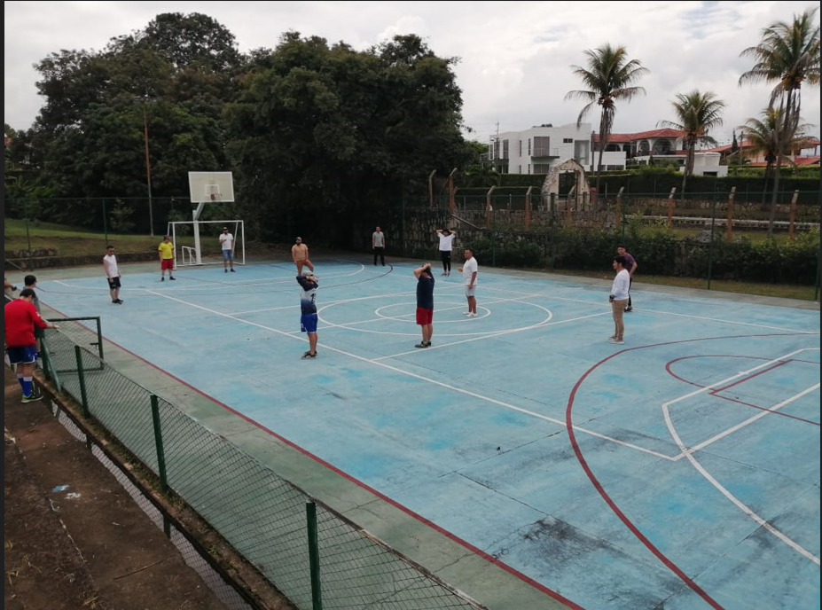

Y este es el parrafo de inicio donde vamos a explicar las cosas increibles que se pueden hacer con ramas.

=======Y este es el párrafo de inicio donde vamos a explicar las cosas increíbles que se pueden hacer con ramas.
>>>>>>> 97e0f2b416992c244975fdaf0a2961c388fadea5Los blogs son la mejor forma de compartir información y tus ideas. Mucho mas que ir a conferencias o salir en Youtube. Execto si eres un Rockstar. Pero estadisticamente no lo eres.........por ahora
Suscribete y dale Like